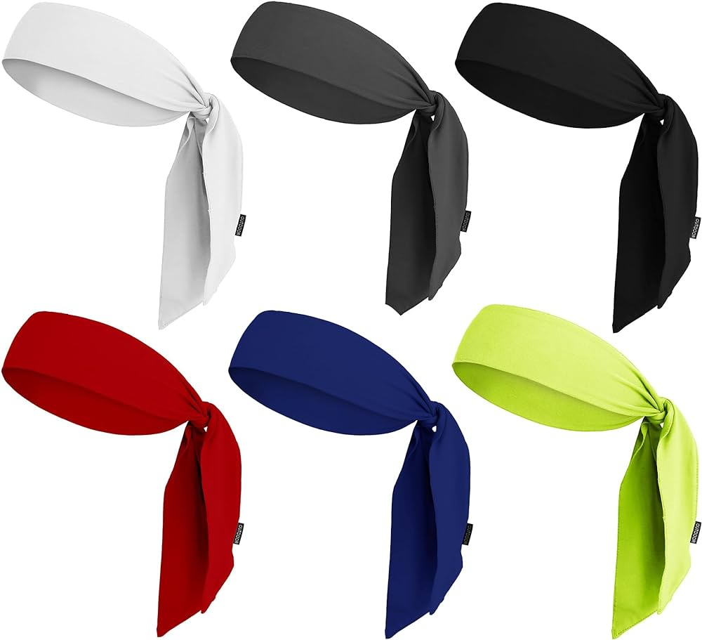
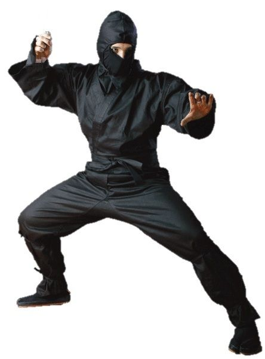
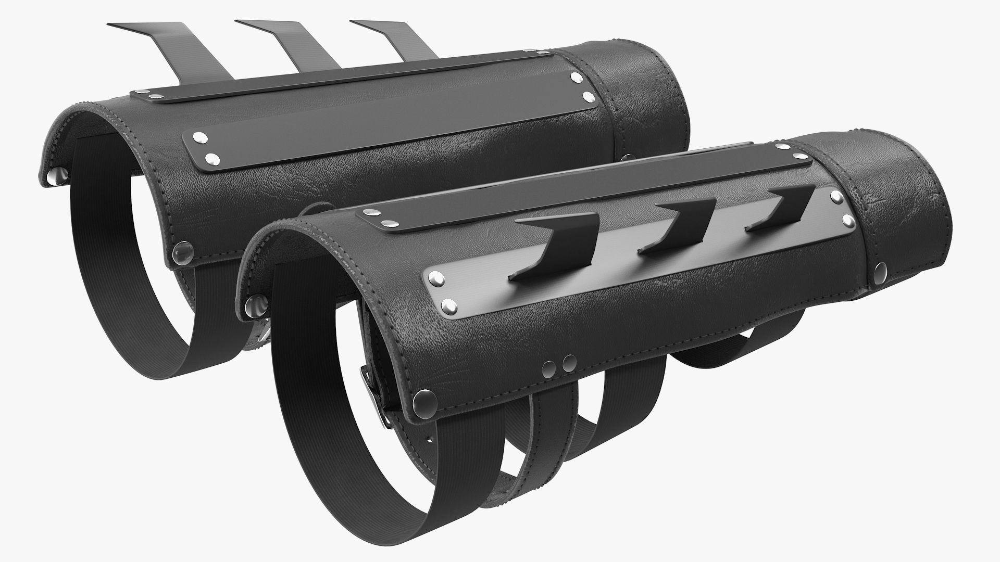
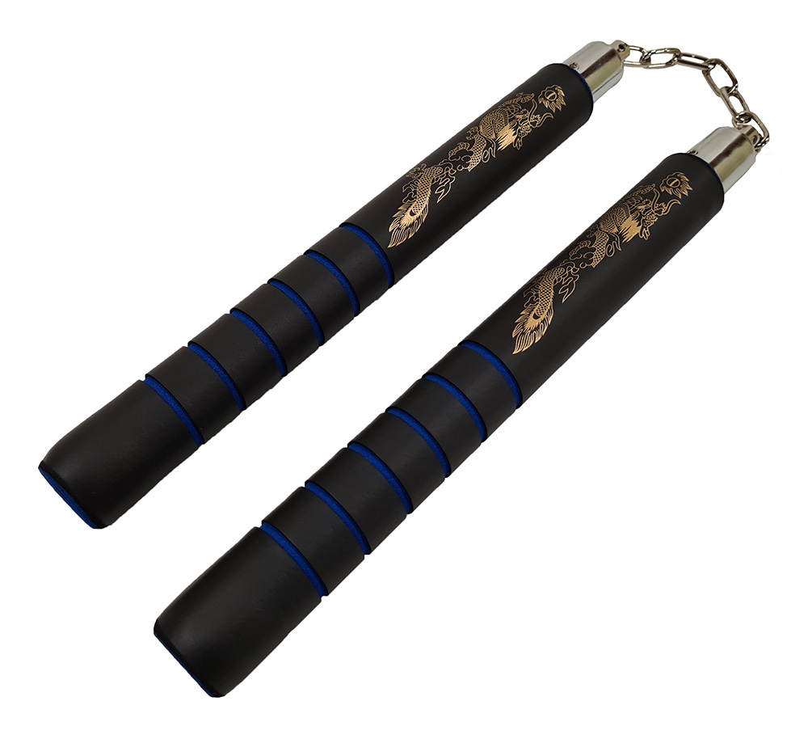

ninja headbands are emblematic accessories that encapsulate the mystique, identity, and symbolism of the ninja warrior. Their simple yet distinct design and the incorporation of the Hitai-ate with its unique symbol make them a potent representation of ninja culture in both traditional and modern contexts. Price: $19.99 plus tax

The Shinobi Shozoku is the traditional attire that defines the ninja's distinctive appearance and embodies their skills in secrecy and concealment. It is a symbol of the historical and cultural legacy of the ninja, representing their role as the masters of stealth and covert operations in feudal Japan. Price: $199.99 (5 Pieces) plus tax

Ninja arm cuffs were versatile and specialized accessories worn by ninja warriors in feudal Japan. Their unique design, with metal spikes for climbing and self-defense, reflects the practical and stealthy nature of the ninja's missions, making them an iconic symbol of ninja culture and ingenuity. Price: $99.99 plus tax

Also known as nunchuks or chainsticks, Nunchaku are a distinctive and dynamic martial arts weapon with a rich history in Okinawan martial arts. Their combination of speed, precision, and the ability to perform captivating techniques has made them a symbol of martial arts excellence and an enduring element of popular culture. Price: $399.99 plus tax